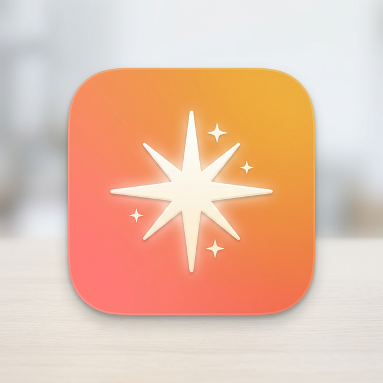

Customizable reminder overlays for your screen.
A tiny app that periodically flashes reminders across your screen — with built-in packs like Sensory, Actualism Method, and more. Create your own packs or edit existing ones. All styling is randomized so you never tune it out.
Appears directly on your desktop as transparent text — not a notification you swipe away.
Timing, position, color, font, animation style are all randomized so you never tune it out.
Appears on all screens simultaneously on macOS, Windows, and Linux.
Built-in packs for sensory awareness, actualism, and more. Create your own or edit existing ones.
Native on every platform — Swift on macOS, Kotlin on Android, C# on Windows, Python+GTK on Linux. No Electron.
Set it once, forget it. Runs silently in the background from boot.
Python + GTK4. Install via Nix or download the tarball.
Download tarballnix run github:srid/AppreciateAppreciate is free and open source under the MIT license. Contributions welcome.
View on GitHub